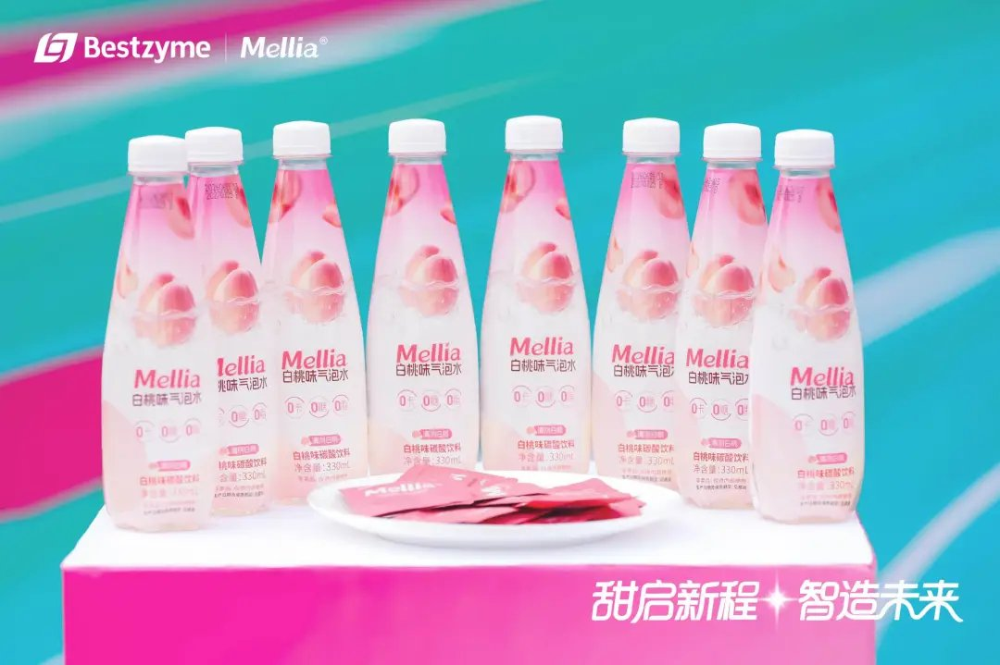

小虚空🍥
@tokerumaisurii
@suwakopro 我在想阿斯巴甜其实也算是一种原始版甜蛋白了（氨基酸构成，不过只是二肽），不过阿斯巴甜确实就没有空间折叠构象也没有多个硫键拉扯稳定结构的性质了

Suwako — e/acc
@suwakopro
中国终于也有甜蛋白量产了啊，甜蛋白是我最期待的代糖了
最早版本的代糖/甜味剂，比如糖精，阿斯巴甜，三氯蔗糖总是被人诟病安全性有问题，不够天然
然后是赤藓糖醇，甜叶菊，罗汉果糖，阿洛酮糖，这些糖都是天然的，但是还是有甜味不对，味道怪等问题 https://t.co/xzLolkEAVm